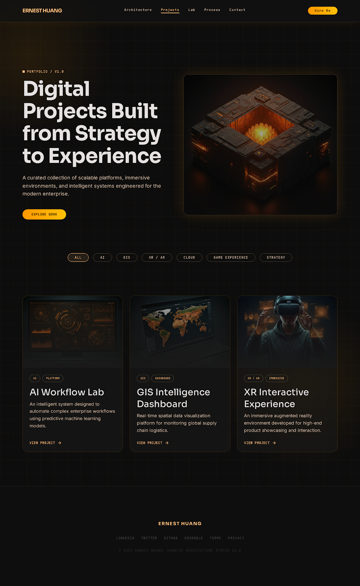

AI-Powered
Machine Learning & LLMs
Digital Innovation Architect
I architect high-performance, future-ready digital ecosystems. I connect strategy, spatial intelligence, artificial intelligence, and immersive realities to solve complex enterprise challenges.
Machine Learning & LLMs
Spatial Data Architecture
Immersive Realities
Scalable Infrastructure
I help teams move from abstract ambition to usable digital products: strategy, architecture, prototypes, dashboards, and interactive experiences that are elegant enough for users and robust enough for operations.
Operating mode
A consultancy-style workflow for leaders who need clarity, fast prototypes, and a technical path that can scale.
02 // Core Services
Roadmaps that align product goals, operational constraints, and technology bets.
Automation plans that introduce LLMs and predictive intelligence with discipline.
Information architecture and system flows for polished, scalable web products.
High-fidelity interfaces that balance premium aesthetics with functional clarity.
Portfolio / V1.0

Predictive automation system for complex enterprise workflows.
View ProjectSpatial data visualization for monitoring logistics and field operations.
View ProjectImmersive prototype for high-end product storytelling and interaction.
View Project03 // Digital Toolkit
A practical stack for prototyping, building, measuring, and scaling modern digital experiences.
OpenAI, Claude, Gemini, LangChain, Python, Jupyter
ArcGIS Pro, QGIS, Mapbox, Cesium, PostGIS
Unity 3D, WebGL, Three.js, Unreal Engine, A-Frame
Microsoft Azure, AWS, Docker, Kubernetes, Terraform
"Technology is valuable only when it helps people understand, decide and act more effectively."
- Ernest Huang
Active Brief
Bring the idea, the business challenge, or the unfinished prototype. I will help shape it into a clear, buildable digital system.
Let's Talk